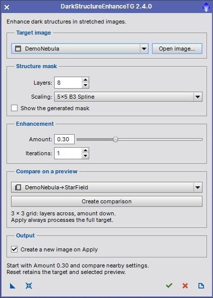

Enhance dark image structures with a generated multiscale mask. User guide for version 2.4.0. [more]
Keywords: dark structures, dust lanes, wavelets, TGScripts
[hide]
[hide]
DarkStructureEnhanceTG derives a grayscale structure mask and uses it to apply a darkening histogram transformation. The original wavelet-mask algorithm is retained. The compact interface separates full-image Apply from a nine-panel comparison on a preview.
Requires PixInsight 1.9.5 or later. Run src/scripts/TGScripts/DarkStructureEnhanceTG.js with Script > Execute Script File to use the repository version. The dialog opens without a loaded image.
[hide]

The screenshot uses synthetic demonstration data. A low first-channel median prompts a warning in the interactive dialog because the image may still be linear; this is a heuristic. Directly applied process instances do not display that warning.
[hide]
Layers
Range 5 to 12, default 8. Sets the number of fine wavelet layers removed when deriving the broad structure residual. The difference between that residual and the image contributes to the dark-structure mask.
Scaling
Choose 3 by 3 Linear Interpolation or 5 by 5 B3 Spline. This changes the smoothing kernel used to derive the mask.
Show the generated mask
Retains and displays the grayscale mask for a successful full-image Apply. Comparison grids do not retain the nine intermediate masks.
Amount
Range 0 to 0.99, default 0.30. Sets the masked histogram midtones value to 0.5 plus half the amount. Zero leaves the image unchanged; larger values darken the masked structures more strongly.
Iterations
Range 1 to 10, default 1. Repeats the same histogram transformation with the generated mask. Increasing both amount and iterations can exaggerate dark structures.
[hide]
Create comparison processes the selected target preview region in a 3 by 3 grid. Columns vary layer count in steps of one; rows vary amount in steps of 0.10. Each panel is labeled with its actual settings. Near a parameter boundary the sampled range shifts to remain within the valid limits.
The preview must be at least 64 by 64 pixels. Its pixels are copied from the corresponding main-image region, then processed independently. Wavelet behavior near crop boundaries can differ from a full-image result. A sufficiently large, representative preview gives a more useful comparison. Selecting a preview never redirects Apply: Apply always processes the complete target.
[hide]
By default Apply creates a new image and leaves source pixels unchanged. Turn off Create a new image on Apply to replace the target pixels in one Undo step. Existing target masks are not used or changed; enhancement uses its own generated mask on a temporary copy. Alpha channels, the source display stretch, RGB working space and FITS keywords are preserved in the new output. Temporary masks and working images are removed on completion or failure.
[hide]
New Instance saves enhancement settings without the target or preview. Reset restores defaults and retains both selections. Apply runs the full target. Close closes the dialog, and Documentation opens this guide. New instances remember the output choice; older instances without that setting retain their original in-place behavior.
[hide]
Compact 420-pixel interface, open-first workflow, repeatable Apply, separate comparison action, optional new-image output, bounded instance settings and PiDoc help. Temporary images are cleaned up on errors. In-place updates have one Undo step, and comparison amounts stay within the supported range.
[hide]
Original algorithm by Carlos Sonnenstein and PixInsight implementation by Oriol Lehmkuhl. TGScripts adaptation by Thorsten Glebe. Distributed under the GNU General Public License, version 3 or later; see the script source for the license notice.
Copyright © 2009 Carlos Sonnenstein and Oriol Lehmkuhl; 2022-2026 Thorsten Glebe